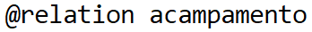
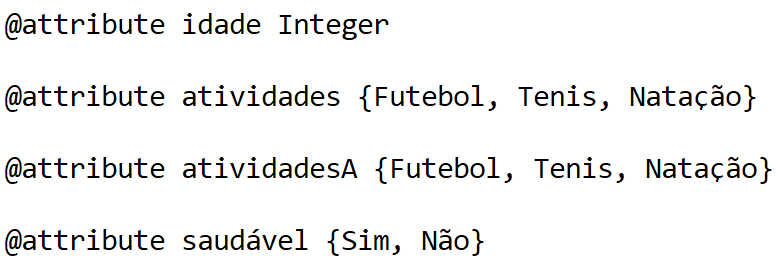

O Weka
Mateus.

O Weka tem como objectivo agregar algoritmos provenientes de diferentes abordagens/paradigmas na sub-área da inteligência artificial dedicada ao estudo de aprendizagem de máquina
Essa sub-área pretende desenvolver algoritmos e técnicas que permitam a um computador "aprender" (no sentido de obter novo conhecimento) quer indutiva quer dedutivamente.
O Weka procede à análise computacional e estatística dos dados fornecidos recorrendo a técnicas de mineração de dados tentando, indutivamente, a partir dos padrões encontrados gerar hipóteses para soluções e no extremos inclusive teorias sobre os dados em questão.
Ele pode ser facilmente instalado clicando aqui
Como criar um arquivo ARFF

Primeiramente, para criar um arquivo ARFF, abra um editor de texto limpo, geralmente já vem instalado no seu sistema operacional, como o bloco de notas do Windows

Use a tag @Relation para definir o nome do arquivo
Para definir o nome do atributo use a tag @Attribute
Para criar elementos com valores dos atributos pré definidos utilize a tag @Data na ordem de criação dos atributos

Clique em salvar como e salve o arquivo como .ARFF, sendo assim, o Weka poderá interpretar seu arquivo
O QUE É KNN ( k-Nearest Neighbors )
KNN(K — Nearest Neighbors) é uma técnica amplamente empregada para reconhecer padrões.O centro de seu funcionamento está em descobrir o vizinho mais proximo de uma dada instancia.O algoritimo (K-Nearest Neighbor - k-NN) pertencendo a um grupo de tecnica denominada de instance based Learning.Nesse caso,são encontrados os K vizinhos mais proximo do padrões de consulta,ao inves de apenas o vizinho mais proximo.Dito dessa forma,esse metodo é bastante simples e de facil implementeção